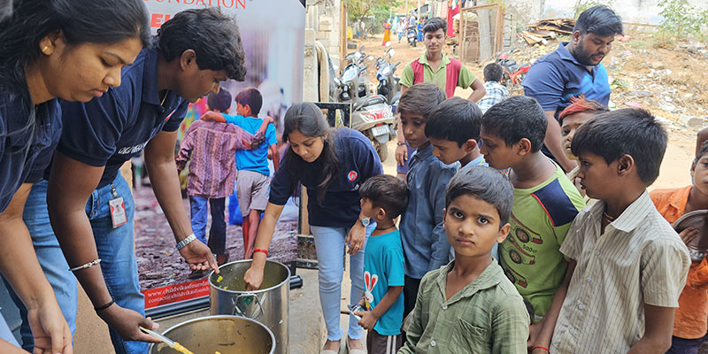
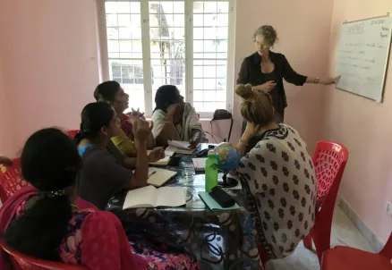
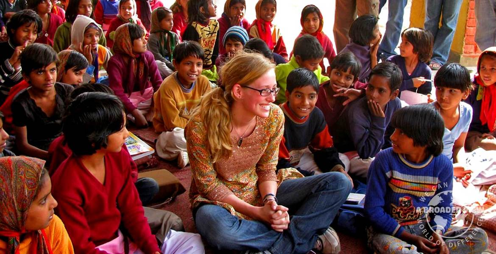
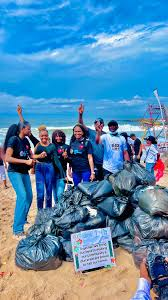

Core Areas of Intervention
YourHope operates across four key sectors, aligned with international sustainable development goals.
1. Food Distribution

Establishing decentralized dry-ration networks and mobile nourishment vans to address structural urban hunger hotspots.
2. Women Empowerment

Deploying technical micro-certification structures, financial literacy training workshops, and cooperative craft production modules.
3. Child Welfare

Providing supplementary classroom education setups, holistic health screenings, and formal school re-integration pipelines.
4. Environmental Initiatives

Driving community micro-forestry spaces, processing organic waste recycling projects, and establishing alternative green tech prototypes.